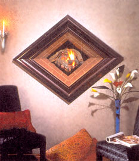
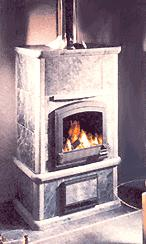
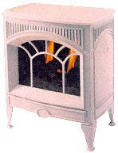
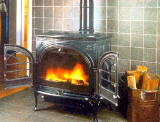
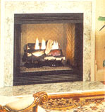
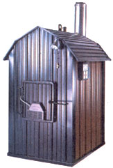
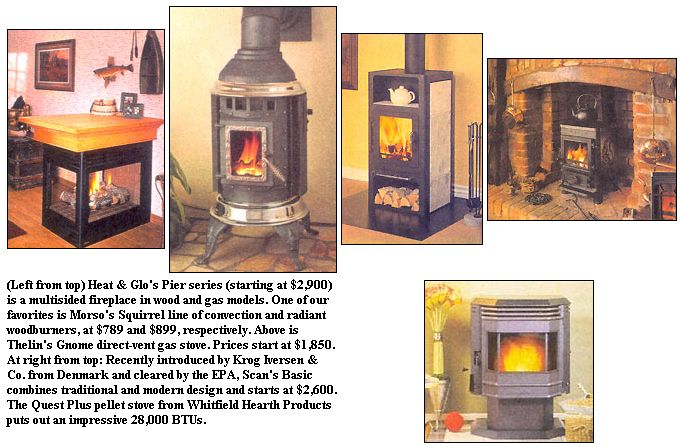

The Return Of Tradition
October/November 2000
Technology languishes, but aesthetics are hot.
by Matt Scanlon
"It was tough for some manufacturers to keep them in stock," says Mike Van Buren, technical director of the Hearth Products Association. "Though the efforts involved in chopping, carrying and storing wood have lately made wood heat a tough chore for some owners, millennium fears definitely changed the landscape."
When our lights stayed on in the first days, then weeks, of January, the lights went out on the woodstove craze. This year, as with most years, gas and electric stoves regained their 70% market footprint, with gas and pellet returning to 25%. More interesting than simple figures is the fact that three-quarters of gas and electric stoves are used for "aesthetic" purposes only. In other words, they provide a home with beautiful flames, but any heat generated is basically an afterthought. As we walked through the hundreds of stove models at this year's Hearth. Products Expo in Baltimore, the concept of "flame as art" - evident in models such as Heat & Glo's CFX Diamond (above) - struck us as an increasingly important selling point for stovemakers. One particularly striking addition to some gas stoves this year has been the inclusion of a "heat dump" - a system in which heat from a gas stove is actually vented outside. "This system's designed for homeowners in warmer climates," says Van Buren, "who want the beauty of a fire but can't comfortably retain the heat." In truth, most owners of gas stoves are grateful for the heat, but the aesthetic burners are gaining ground every year.
It's hard not to feel despondent watching gas being consumed for the sake of visual pleasure, and we had to keep out tongues in check as we watched heat dumps busily wasting fuel.
Blaming the manufacturer for a questionable market trend, however, is like blaming Italy for a preponderance of pizza: They build what we want.
On the traditional wood heat side of the $2.5 billion hearth products industry which has doubled in the last ten years), manufacturers breathed a sigh of relief when the EPA chose not to modify its emissions standards in 2000. As a result, design seemed to make a more determined stride toward the more traditional. If wood heat is your preference, Morso's Squirrel typifies this return to old-time stoves. Waterford's entire line, from the smaller Trinity up to the full-blown Stanley Cookstove are also wood heat standouts. Thelin's Gnome and Martin's Vent-Free Cast Iron, though gas burners, look too, as if they came from Grandad's living room.
The last trends in true woodburners worth mentioning are the masonry stove, exterior furnace and the fresh-air vented model. The short, hot burns and lasting heat produced through a heavy masonry stove, such as Tulkivi's TU1000 and similar models by Temp-Cast, take some of the chore out constant fire maintenance and wood hauling. Soon after you light a fire in a masonry stove, the temperature in the firebox rises to 1,200°F or more. The extreme heat results in secondary combustion, which consumes most of the gases produced by the burning wood. Thus, a considerable amount of heat that would otherwise go up the flue heats the masonry instead. Woodstock Soapstone also uses soapstone as a heat sink, but on a smaller scale than full masonry models.
Central Boiler's outdoor furnaces, such as the Classic CL 4436SB can make off-the-grid living a more practical consideration by combining your air, hot water and even radiant floor heating systems into one woodburning appliance.
An efficient home in the winter is, of course, effectively shut, caulked and sealed. This exclusion of outdoor air can make for easier heating, but it can also radically compromise indoor air quality. Travis Industries' Xtrordinair woodburning fireplace draws outside air into the firebox via an exterior electric fan, thus assuring a continuous flow of clean air.
|
 Fire as art? It might not be your cup of tea, but Heat & Glo's CFX Diamond certainly attracts attention. At $2,499, it better. |
 Tulikivi s TU 1000 soapstone masonry fireplace, at 12,000 BTUs/hr, seems modest-but the heat endures. Prices start at $4,600. |
 Martin's Vent-Free Cast Iron gas burner ($550) retains some old-fashioned charm. |
|
 Jotul F600 Firelight CB Wood Stove kicks out a maximum of 55,000 BTUs/hr. It retails for $1,000 to $2,200. |
 |
 |
|
 |
 |
|